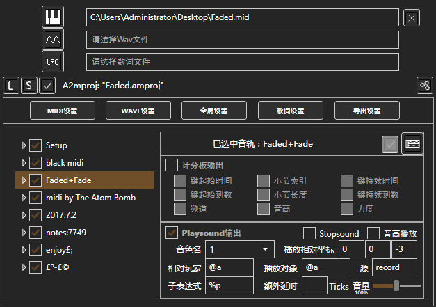
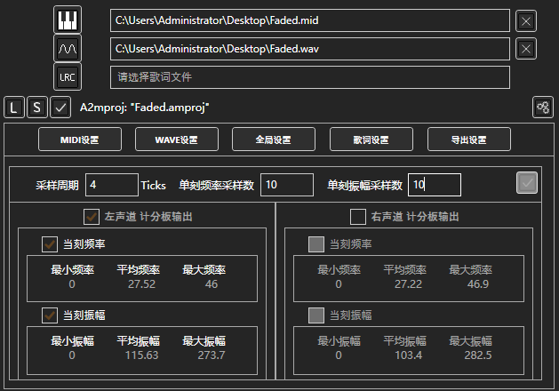
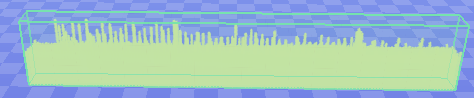
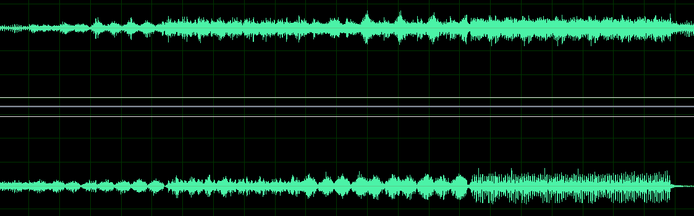
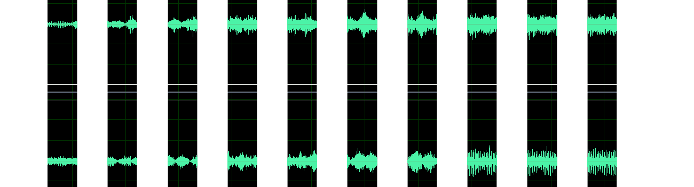
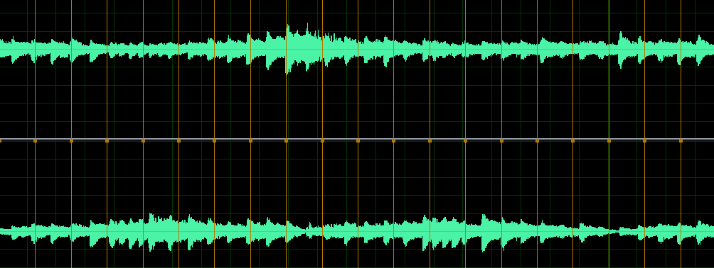
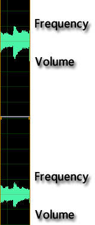
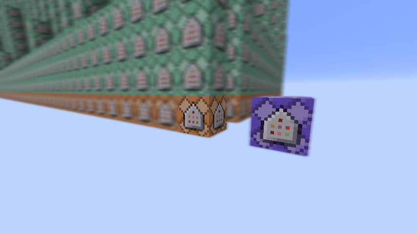
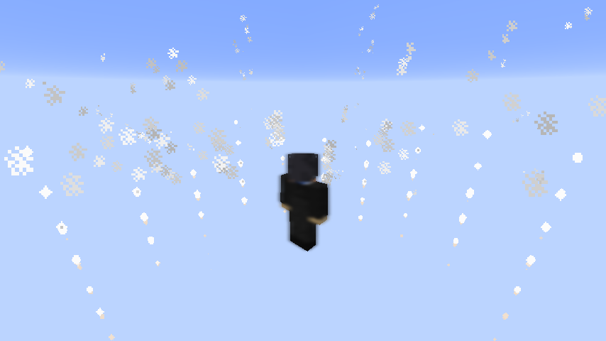

这一步不再赘述了，前两个示例已经演示过了基本方法。对本项目我们使用soma资源包全钢琴音色输出：

制作波形可视化的第一步就是要对波形文件进行采样。

图中我们设定采样周期为4刻，频率采样数和振幅采样数都为10。
最终，采样所得的频率和振幅的值将会被输出到计分板上。

同样，使用MCEdit导入schematic到存档并保存。图中可以看到，命令流的高度增加了不少。
你可能会纳闷：采样究竟是一个怎样的过程？下面我将图解采样的步骤。
如图所示是一个波形文件的波形。

总刻数÷采样周期)
采样数)

采样所得的信息(频率和振幅)将以计分板形式输出。
可视化制作多用function命令穷举。
你可以在初始化命令中找到对应实体的标签，也可以靠命名规则推测。如示例中启用了波形左声道，且采样数为10，则对应的实体标签为"wave_l_0"~"wave_l_9"。
手动穷举将是复杂且繁琐的，如果你会Excel或者编程，你将节省很多时间。例如在这里我要让波形的参数与粒子效果相关联，做到类似AfterEffect中粒子关联音频关键帧的特效，我使用了以下代码得到命令的穷举：
for (var i = 0; i < 10; i++) //采样数穷举
{
for (var j = 0; j <= 8; j++) //振幅范围穷举
{
for (var q = 0; q < 5; q++) //频率范围穷举
{
var m = "execute @e[tag=wave0_l_" + i + ",score_Fre_min=" + j * 5 + ",score_Fre=" + ((j == 8) ? (j + 10) * 5 : (j + 1) * 5 ) + ",score_Vol_min=" + q * 50 + ",score_Vol=" + ((q == 4) ? (q + 10) * 50 : (q + 1) * 50 ) + "] ~ ~ ~ execute @p ~" + Math.Round(Math.Cos(Math.PI * i / 9) * 5, 4) + " ~" +( -2 + (j - 3) * 0.8 ) + " ~" + Math.Round(Math.Sin(Math.PI * i / 9) * 5, 4) + " particle cloud ~ ~ ~ " + q * Math.Round(Math.Cos(2 * Math.PI * i / 9 - Math.PI / 2), 4) * 0.4 + " " + (j - 3) * 0.2 + " " + q * Math.Round(Math.Sin(2 * Math.PI * i / 9 - Math.PI / 2), 4) * 0.4 + " " + ( q + 1 ) * 0.25 + " 0";
var k = "execute @e[tag=wave0_l_" + i + ",score_Fre_min=" + j * 5 + ",score_Fre=" + ((j == 8) ? (j + 10) * 5 : (j + 1) * 5 ) + ",score_Vol_min=" + q * 50 + ",score_Vol=" + ((q == 4) ? (q + 10) * 50 : (q + 1) * 50 ) + "] ~ ~ ~ execute @p ~" + Math.Round(Math.Cos(Math.PI * i / 9) * 5, 4) + " ~" +( -2 + (j - 3) * 0.8 ) + " ~" + Math.Round(Math.Sin(Math.PI * i / 9) * 5, 4) + " particle endRod ~ ~ ~ 0 0 0 0.7 0";
Console.WriteLine(m);
Console.WriteLine(k);
}
}
}
最终得到了900条命令：
execute @e[tag=wave0_l_0,score_Fre_min=0,score_Fre=5,score_Vol_min=0,score_Vol=50] ~ ~ ~ execute @p ~5 ~-4.4 ~0 particle cloud ~ ~ ~ 0 -0.6 0 0.25 0 execute @e[tag=wave0_l_0,score_Fre_min=0,score_Fre=5,score_Vol_min=0,score_Vol=50] ~ ~ ~ execute @p ~5 ~-4.4 ~0 particle endRod ~ ~ ~ 0 0 0 0.7 0 execute @e[tag=wave0_l_0,score_Fre_min=0,score_Fre=5,score_Vol_min=50,score_Vol=100] ~ ~ ~ execute @p ~5 ~-4.4 ~0 particle cloud ~ ~ ~ 0 -0.6 -0.4 0.5 0 execute @e[tag=wave0_l_0,score_Fre_min=0,score_Fre=5,score_Vol_min=50,score_Vol=100] ~ ~ ~ execute @p ~5 ~-4.4 ~0 particle endRod ~ ~ ~ 0 0 0 0.7 0 ...
你可能认为900条命令同时执行会有些卡顿，但对于function来说这900条命令是完全可以流畅运行的。
接下来我们进入游戏中，让可视化效果能成功显示出来。

首先放置一个保持激活的RCB，并使用function命令反复调用function文件。
在播放命令流前，别忘了执行初始化命令，否则可视化效果无法正常显示。

最终的可视化效果如上。(单图不能表现什么，需要下载工程亲自体会)
不只是波形能实现可视化，Midi中键的各种信息也能输出到计分板用于可视化。
使用"相对路径"导入即可。播放需要使用soma资源包。别忘了放置保持激活的RCB持续调用function文件。